Черный список в Инстаграме: блокировка и просмотр пользователей

Посмотреть черный список в Инстаграме* может любой обладатель личного аккаунта. Добавить в список заблокированных можно всех, кого владелец пожелает нужным, как и исключить из этого перечня.
Где найти черный список в Инстаграме*
В социальной сети список заблокированных можно посмотреть через вкладку: «Конфиденциальность». В этом перечне показаны все пользователи, которых ранее владелец страницы добавил. Есть одна кнопка: «Удалить», которая необходима, чтобы восстановить активность подписчика или посетителя. Особенности функции:
- можно блокировать даже подписчика, если он пишет грубые комментарии или отправляет непристойные сообщения;
- есть два типа блокировки: «Ограничить доступ», «Черный список» и третий вариант – просто скрыть страницу из Ленты;
- если добавить в черный список – добавленный не узнает об этом. Уведомлений относительно блокировки нет, но он сможет проверить через отправку сообщений или комментариев;
- можно добавить взаимно, если знать никнейм этого человека;
- в список вносят через: аккаунт, комментарии, Директ.
После блокировки нельзя отправить сообщение, комментарий, просмотреть контент. Также, если этот человек входил в список подписчиков – он автоматически будет отписан. Следующее, что нужно помнить: посмотреть страницу заблокированного также не получится.
Как заблокировать человека в Инстаграме* с телефона
Заблокировать чужой аккаунт в Инстаграме* можно со смартфона или компьютерной версии. Разницы между добавлением в черный список нет и в любом случае можно вернуться, чтобы разблокировать. Как добавить человека в Черный список:
- Зайти в Инстаграм* – выбрать пользователя, которого нужно добавить в «Заблокированные».
- Перейти на страницу – нажать сверху три точки.
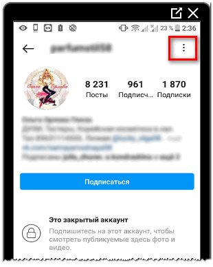
- Заблокировать – подтвердить.
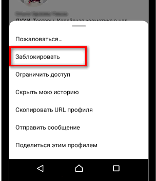
Далее, страница будет обновлена и появится надпись: «Публикации недоступны».
Чтобы разблокировать:
- Перейти в свой профиль – нажать сверху: «Настройки».
- Выбрать: «Конфиденциальность» - Заблокированные аккаунты.
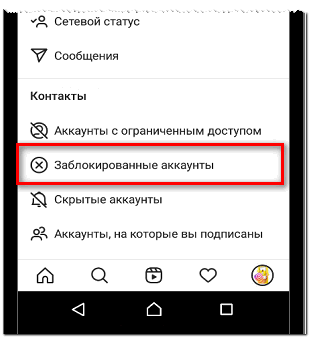
- Перейти к перечню – выбрать человека, которого нужно исключить.
Но после того, как владелец профиля удалит заблокированного, тот не будет восстановлен в подписчиках. Теперь он сможет подписаться вновь, если снова наткнется на страницу или если она будет рекомендована от друзей.
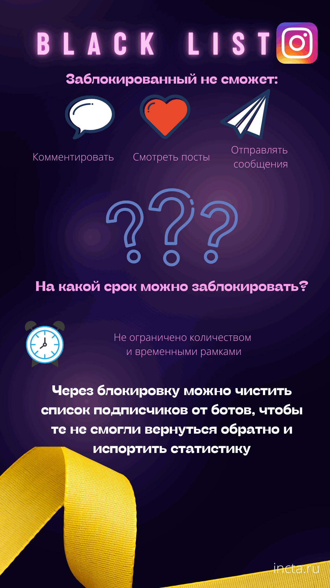
С компьютерной версии
С компьютера заблокировать другого пользователя также просто, как и с мобильной версии. Нужно перейти в браузере к своему профилю и авторизоваться. Как заблокировать через браузерную версию:
- Зайти в Инстаграм* с компьютера.
- Перейти к поиску пользователей или найти среди подписчиков.
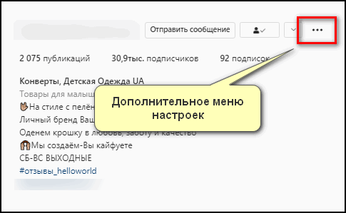
- Выбрать нужного человека – нажать три точки рядом с кнопкой «Подписаться».
- В появившемся меню выбрать: «Заблокировать» - подтвердить действие.
Помимо блокировки, в появившемся меню будут пункты: «Пожаловаться» и «Ограничить доступ». Второй вариант – одна из разновидностей блокировки, которая всего лишь недоступными комментарии и сообщения. Но в остальном, пользователь может просматривать последние записи, Истории.
Но с компьютерной версии нельзя разблокировать человека, воспользовавшись разделом «Безопасность». Инстаграм* только покажет перечень тех, кто был заблокирован. Посмотреть всех, кто добавлен в «Черный список»:
- Нажать по значку своей аватарки.
- Настройки – Безопасность и конфиденциальность.
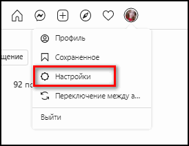
- Данные аккаунта – Профили, которые вы заблокировали.
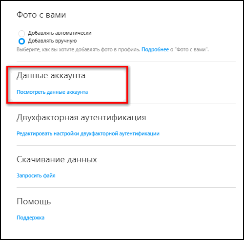
Чтобы разблокировать одного из перечня, нужно скопировать его ник и вставить в строку поиска. Социальная сеть переведет на личный профиль и уже там, через дополнительное меню, можно выбрать функцию: «Разблокировать».
Профили с ограниченными функциями
Ограничение действий определенной страницы необходимо, если владелец не хочет полностью блокировать пользователя, а только убрать половину возможностей. Такой функцией Инстаграм* дает право владельцам учетных записей выбирать категории контента, которыми бы они хотели делиться, без страха за свою публичность. Как заблокировать аккаунт другого пользователя в Инстаграме*:
- Перейти к выбранной странице в социальной сети.
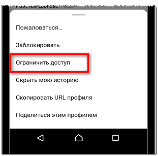
- Нажать сверху три точки: «Ограничить действия» - подтвердить действие.
С помощью настроек «Конфиденциальности» можно удалить аккаунт из этого списка. Пользователь не будет удален или отписан, просто некоторые из действий не будут доступны. Точнее, но сможет оставлять отзывы и отправлять сообщения, но ни владелец страницы, ни остальные подписчики этого не увидят.
В раздел: «Профили с ограниченным доступом» можно добавлять неограниченное количество страниц. Как и в случае с блокировкой, достаточно перейти к настройкам и выбрать вариант: «Снять ограничения». Или же перейти в аккаунт к этому человеку и выбрать опцию под аватаркой.
Скрыть страницу
Функция «Скрыть» работает по принципу исключений контента из Ленты. То есть, владелец учетной записи убирает из перечня интересных публикаций кого-то из подписок. Такой способ необходим, если владельцу нужно временно отфильтровать список интересных страниц и он не хочет отписываться. Как скрыть:
- Зайти в Инстаграм* – нажать над появившейся публикации три точки.
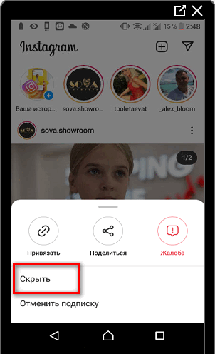
- Скрыть – подтвердить действие.
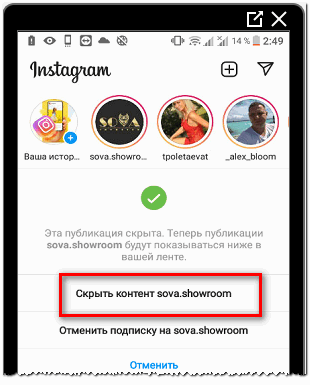
После этого контент не появится в списке последних добавленных. При необходимости, владелец может перейти в список «Подписки» и открыв профиль, разблокировать. Или, воспользоваться тем же разделом: «Конфиденциальность» - Скрытые аккаунты. Как и в черном списке, количество страниц, которые можно добавить, не ограничено. Это значит, что можно максимально отфильтровать контент и оставить только интересные профили.
Заблокировать звонки через Директ
С помощью Директа можно блокировать учетные записи или же выключить вызовы. В переписке появится уведомление: «Вы пропустили сеанс видеосвязи». При этом, отправитель не получит оповещений о том, что ему запрещено звонить. Скрыть вызовы для определенного пользователя:
- Зайти в Директ – выбрать чат.
- Открыть – сверху нажать по значку с восклицательным знаком.
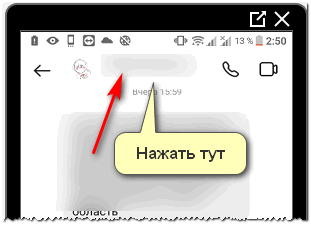
- В вариантах действий: «Отключить уведомления о вызовах».
- Сохранить.
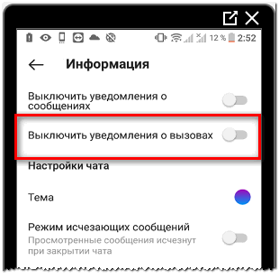
Помимо этого, можно отключить оповещения о сообщениях и тогда владелец аккаунта сможет узнать о новых с помощью счетчика возле Директа. Чтобы другой пользователь вовсе не смог отправлять сообщения или вызывать по видеосвязи:
- Перейти к настройке чата – выбрать внизу: «Заблокировать пользователя».
- Сохранить настройки.
Через параметры «Конфиденциальности» в аккаунте можно указать, какая категория подписчиков и посетителей смогут отправлять сообщения. При необходимости можно заблокировать все текстовые уведомления, включая пользователей со взаимной подпиской.
Добавить через комментарии
Если участник беседы пишет грубые отзывы или просто надоедает с комментариями – его можно заблокировать через соответствующее меню. В комментариях доступны две функции: «Пожаловаться» и «Заблокировать». Добавить в «Черный список» через отзывы:
- Зайти в Инстаграм* – перейти к любой публикации где включены комментарии.
- Выбрать человека, которого нужно заблокировать – зажать пальцем по тексту ответа.
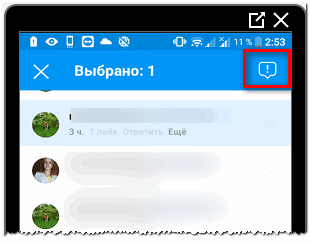
- Появится сверху кнопка в виде восклицательного знака – Заблокировать.
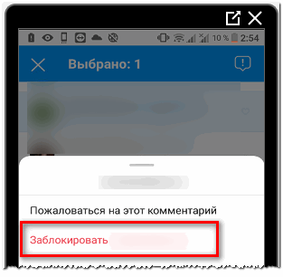
Подтвердив действие, владелец страницы найдет этого пользователя в перечне заблокированных. Но можно поступить иначе и перейти в учетную запись своего собеседника. Далее, нажать три точки и выбрать функцию для блокировки.
Как только аккаунт будет заблокирован, собеседник не сможет отправлять уведомления, а все предыдущие комментарии будут удалены. Единственный вариант, который остается – использовать никнейм и указывать оппонента с помощью отдельных отзывов.
Что будет если взаимно добавить в черный список в Инстаграме*
Добавить взаимно получится лишь в том случае, если запомнить никнейм обидчика. В меню «Заблокированные» есть поиск, где нужно ввести ник и найти среди всех пользователей. Причем, если уже заблокировали – его страница не появится в списке и придется ориентироваться по сохраненным данным. Что происходит при взаимной подписке:
- найти страницу в поиске не получится;
- даже разблокировав контент не появится;
- можно заблокировать все новые страницы. Инстаграм* будет блокировать по номеру телефона.
Как воспользоваться поиском в «Черном списке»:
- Зайти в Инстаграм* – раздел: «Настройки».
- Конфиденциальность – Ограниченный доступ.
- Ввести никнейм в поиске – добавить в перечень.
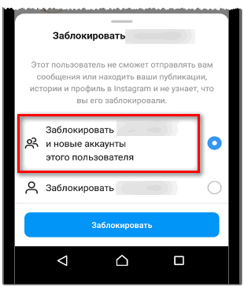
- Перейти в профиль – выбрать сверху три точки: «Заблокировать».
Или, есть другой вариант – попросить друзей, чтобы они поделились ссылкой на нужного человека. То же возможно если воспользоваться второй учетной записью, искать человека без авторизации.